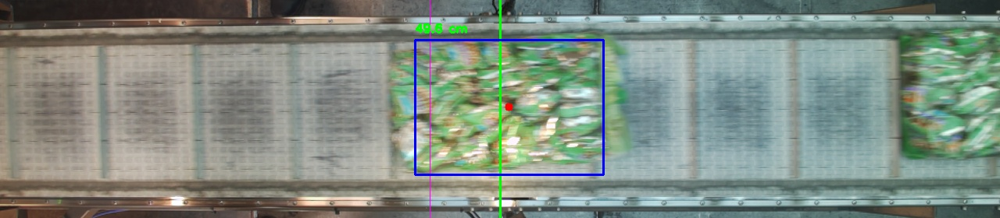
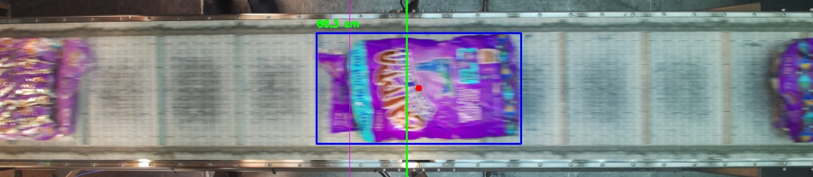

Week Ending: July 10, 2026 (Week 32)
Major Milestone AchievedSummary & Key Progress
- Load Bay 17 Breakthrough: Completely overhauled the internal tracking script (`mt5.py`) using a physical-measurement blueprint. By linking the constant 51.5 cm width of our conveyor belt to camera pixels, the system can now calculate actual object dimensions automatically.
- Solves Packaging Glare & Seams: Implemented a "clustering rule" that automatically stitches fragmented frames back into single full-object counts. If the camera detects split boxes within 12 cm of each other (caused by clear human-packed backings or prominent machine-packed center seams), it forcefully groups them into a unified bag size.
- High-Volume Dashboard Data Auditing: Coordinated with Arcaidea to introduce flexible pagination (up to 96 frames per page) and bulk tools, dropping sorting overhead from hours down to just one hour. Manually audited and pushed 29,233 total captures through the vector catalog pipeline this week.
Live Run Shift Test Metrics
We executed a live truck-loading test during a shift to evaluate the updated deterministic tracking framework under actual operational speeds:
- Initial Container Load: Hit 100% counting accuracy across the first 250 bags deep inside the vehicle container.
- Overall Shift Performance: Maintained an overall tracking consistency above 95% across consecutive high-volume batches—a massive leap forward from last week's sub-40% baseline metrics.
- Performance Thresholds: Noted minor volume tracking struggles when highly dense, mixed bag sizes strike the belt simultaneously.
Footage & Visual Analysis
Diagnostic video showing the pixel-stitching engine in action during our live shift test:
Live Truck Test - Dual View Diagnostics
How the Dual-View Tracking Works:
The diagnostic video uses a split layout to show exactly how the AI "sees" and handles the bags on the factory floor:
- Top Feed (Live Footage): This shows the normal camera view of the conveyor. You will see colored counting boxes locking onto the bags. Thanks to our new formula, the script measures the exact size of the bag in real-time. If a box doesn't match a standard bag size footprint, the system investigates it further rather than blindly adding it to the tally.
- Bottom Feed (The Black Mask): This is a filtered view where the background conveyor belt is completely blacked out, leaving only moving objects lit up in white. When a bag lands on its back, its crinkly plastic surface reflects glare, making it look like 3 or 4 tiny shattered white shapes on the black screen.
- The "Stitching" Logic: Our script looks at this black mask and measures the physical gap between those shattered white shapes. If they are within 12 cm of each other and fit neatly inside a standard 40cm x 40cm boundary, the code immediately glues them together into one large, solid object. This prevents a single reflective bag from being accidentally miscounted as 3 separate smaller items.
Calibration & Measurement Verifications
Below are reference captures demonstrating how the system establishes its physical scale and groups the pixels into verified product dimensions:

1. Conveyor Belt Baseline Calibration
Locking onto the 51.5 cm physical belt width. The script uses this static horizontal span to translate camera pixels into real-world centimeters across the entire tracking zone.

2. Clustering Fragmented Targets
A visual breakdown showing how independent, erratic bounding boxes caused by packaging glare are grouped together once they fall within the 12 cm proximity limit.
Environmental Challenges & Next Steps
- Sunlight Isolation: Tracking accuracy dipped near the back of the run as the conveyor extended closer to the open garage roller door where daytime sunlight bled in. Building a physical isolation tunnel over the belt remains the core priority to block shifting exterior glare.
- Dispatch Integration: Installing a dedicated physical numpad at the dispatch station next week to train loading workers to manually trigger batch tracking. I will look into purchasing an external indicator light to alert workers when the system is actively in "counting mode" so they don't have to look down at a monitor screen.
- Predictive SKU Tracking: Expanding the script's tracking logic to measure the physical gaps between moving products. Because different flavors sit and space out uniquely on the fast teeth conveyor, this will allow us to predict what specific SKU is being loaded based entirely on its velocity and spacing profile.